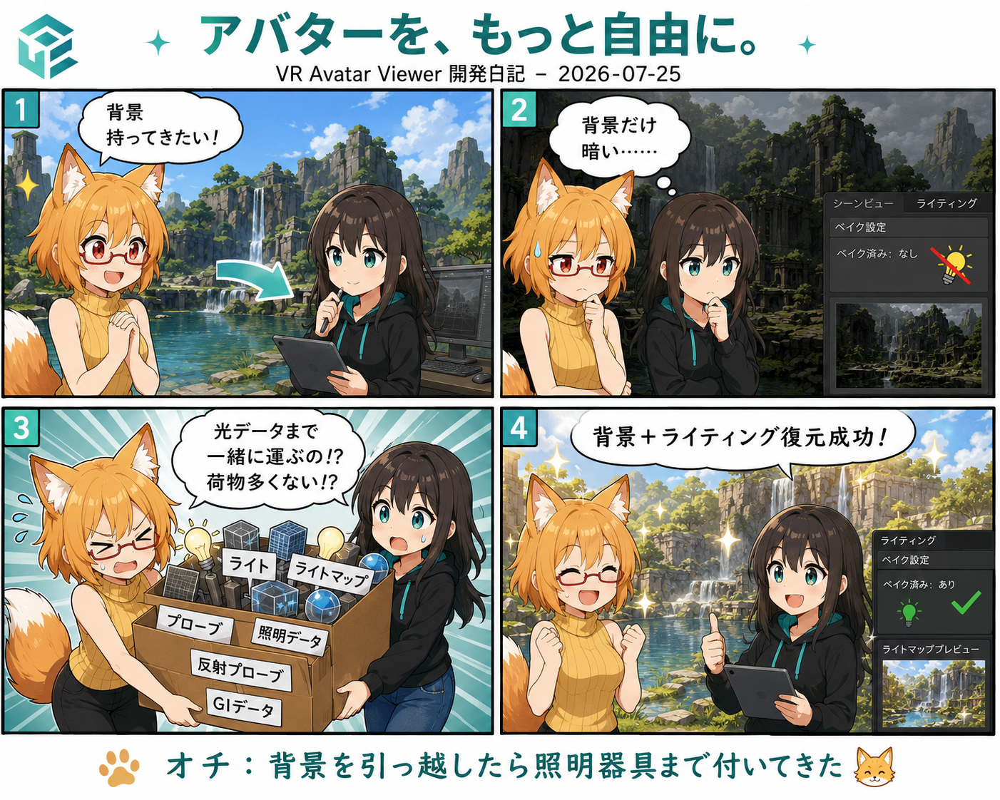

背景を持ってきたら、光まで引っ越してきた日
今日はUnityで作られた背景をVR Avatar Viewerへ持ち込む作業が、一段大きく前進しました。部屋の形だけではなく、そこに焼き込まれていた光と影まで一緒に連れてくる回です。

背景を開けた。部屋は出た。でも、なんか暗い
配布されているUnityPackageから背景を読み込めるようになると、最初に目へ入るのは床や壁、家具といった3Dモデルです。ところが背景の「雰囲気」は、それだけでは決まりません。
Unityでは、動かない壁や床に当たる光をあらかじめ計算し、その結果を画像として保存しておくことがあります。これがベイク済みライティングです。毎フレーム全部の光を計算し直さなくてよいので軽くできますが、引っ越し先へそのデータを持っていかなければ、せっかく作った陰影が消えてしまいます。
ろひ「部屋は来た！」
ルミナ「はい」
ろひ「でも雰囲気が実家に置いてきぼり」
ルミナ「光の荷物も運びます」
7月25日、光の引っ越し便が本格稼働
朝の大型コミット 8abc90b では、UnityPackageに含まれるベイク済み照明を読み取り、VR Avatar Viewerの背景保存形式へ移す処理が大きく追加されました。
Viewer内部では背景をVBGという独自形式にまとめています。これは「背景モデルだけの箱」ではなく、カメラ、環境設定、反射、照明など、その場所らしさを再現するための情報もまとめて持てる背景パッケージです。
今回は、壁や床に貼る光の結果であるライトマップ、周囲の映り込みを助けるリフレクションプローブ、アバターのように動く物体へ周囲の明るさを伝えるライトプローブ、さらに背景側が所有しているライトまで、できるだけ元の対応関係を失わず保存・復元する方向へ進みました。
「だいたいこの壁かな？」は禁止
この手の変換で怖いのは、読み取った光を別の壁へ貼ってしまうことです。見た目が似た部品を名前順で推測して対応させると、背景が少し変わっただけで破綻します。
そこで今回の実装では、Unityが内部で持つIDを使い、「この光の情報は、このRendererに対応する」という結び付きを追いかけます。名前の雰囲気ではなく、元データの参照関係を正本にする方針です。
記事を書く側からすると一行ですが、今日のコミットは55ファイル、4,136行追加。光は目に見えないのに、引っ越し荷物はかなり多めでした。
HDRの明るい光にはEXRも必要だった
明るさの幅が大きいライトマップでは、EXRという画像形式が使われることがあります。普通の画像より明るさの情報を広く持てるので、照明には便利ですが、Viewer側で安全に読み取る仕組みが必要です。
今日はEXRを読み取るネイティブ処理とテストも追加されました。外部コードについてはライセンス表示とセキュリティ確認も一緒に管理し、「表示できれば何でもよし」ではなく、配布できる形まで含めて整えています。
深夜から昼まで、実はほかにも濃かった
7月25日は背景だけの日ではありません。深夜には、UnityPackageのシーンをVBG 2.0へ正規化する処理、アニメーションファイルが古い世代のデータを拾う問題の修正、アバター変換時の画像圧縮を高速化する処理、撮影解像度を最大4Kまで選べる設定も入っています。
さらに昼のコミット f4280d4 では、実行時の負荷制御、背景読込の非同期化、VRプレビューの描画頻度制御に加え、FBX取り込みとPhysBone（髪や服などの揺れ物）の再現も改善されました。7月25日だけで134ファイルに変更が入り、前日深夜の状態から11,570行追加・294行削除。今日は一つの機能を作ったというより、Viewerの足回りを何本も同時に太くしている日になっています。
4コマの裏話
漫画では、背景モデルだけを先に運ぶと暗くなり、あとからライト、ライトマップ、プローブ、GIデータまで巨大な荷物として運び込む流れにしました。実装側で実際に扱っているのは、ライトマップの位置・大きさを示す値、HDR画像の色の扱い、各Rendererとの対応付けなど。見えない「光の情報」ほど引っ越し荷物が多い、という今回の実装をそのままオチにしています。
ろひ「背景ひとつ持ってくるだけじゃなかったの？」
ルミナ「家具、照明、反射、光の焼き付けデータ付きです」
ろひ「引っ越し業者だった」
今日のまとめ
- UnityPackage背景をVBG 2.0へ変換する流れを強化
- ベイク済みライトマップ、反射、ライトプローブなどの再現を追加
- Rendererと照明データを内部IDで正しく結び付ける処理を追加
- HDRライトマップ向けのEXR読込処理と安全確認を追加
- 同日にはVAC修正、BC7圧縮高速化、4K撮影対応も進行
- 最終HEAD f4280d4 で実行時負荷制御、背景読込、VR描画、FBX・PhysBone再現も改善
本日のひとこと
背景を引っ越したら、照明器具どころか「昨日まで壁に当たっていた光」まで荷造りすることになった。
モデルが表示できるところから、その場所の空気まで持ってこられるところへ。VR Avatar Viewerの背景機能は、また少し「見るための背景」から「撮影できる場所」へ近づきました。